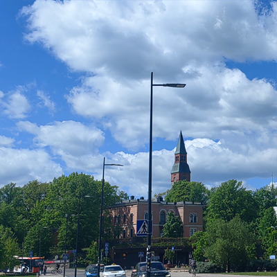

虽然早已耳闻北欧冷清肃穆、芬兰人性格孤僻云云,但是真来了发现并未言过其实.
芬兰的大街上除了环境背景音,少有人说话,芬兰人之间很少交谈,但是他们看起来并不紧绷,而是独处时的一种放松和恢复能量的感觉.如果你在公共交通比如电车上忽然听到有人大声打电话,那么看过去99.9%的概率都是移民.
芬兰人不喜欢主动交流,但是一旦问问题,会发现他们大都能用流畅的英语交谈,也有可能是我交流的本来就是大学周边的人.芬兰的孩子很少,但是孩子的照看和管理都很用心,在芬兰时经常看见出来逛的学校路队,他们的班级很迷你、大都是10多人一个班,由2-3个老师带队看护.芬兰的低生育率和芬兰人的性格有关,他们喜欢独处、难以维持长期关系.
芬兰的赫尔辛基大学有个特别的设定,就是在一栋额外的建筑里有个"思考室",看起来像是为头脑风暴准备的,看起来面积很大,有图书馆般的规模;在赫大调研时、看赫大的课程设置,他们好像对固定的知识框架教学不太推崇,反而是推崇发散性思维的、内容不确定的灵活实践教学.
芬兰各处都有双语标识,是芬兰语和瑞典语.芬兰人虽然内向、但是骨子里并不像我们想象的那么不解风情,实际上从很多细节可以看出他们内心世界的丰富,比如地铁线的心形闭环、交通线上关于人类进化的涂鸦等等.

芬兰很难有繁华和热闹感.